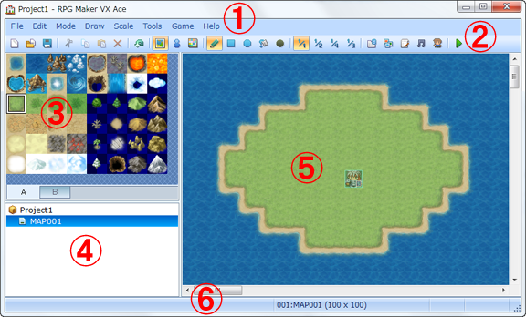

The window that appears when you open a project is known as the main window. This window is mainly used for editing maps and events. The Database, Resource Manager, and other tools are opened from the main window's menu bar. The functions of each window element are described below.

The program's commands can be accessed through the menu bar.
You can also access certain commands by clicking buttons on the toolbar.
The tile palette displays the tilesets that can be placed on maps. You can use the tabs at the bottom to switch between sets.
This list shows the map data included in the game you are currently creating.
This pane displays the map currently selected in the map list. Use it to perform such actions as editing the map design and specifying where to place events.
The status bar displays information on the currently selected command, the map name, and map coordinates.
Creating games with this program mainly involves specifying text, items, and other data by means of the UI elements provided in the various windows and dialog boxes. The kinds of UI elements and editing methods are described below.
Clicking in a text box displays a flashing bar cursor. This indicates you can enter text using the keyboard. The text you type will be entered at the cursor's current position. You can also move the cursor using the keyboard's cursor keys.
As with text entry, clicking in one of these boxes displays a flashing bar cursor. Enter single-byte numbers using the keyboard. You can also increment/decrement values by clicking the up arrow and down arrow buttons to the right of the box.
These buttons specify one option to apply from a number of choices. The option with a black dot in the center of the circle is the current selection. Clicking another one clears the previous selection.
These boxes select or clear the indicated item. The check boxes with checks in them indicate that they are selected. Clicking a selected check box clears it.
These lists are used to specify one of the items contained within them. They open by clicking on the down arrow to the right of them.
These boxes display a list of items that can be set. Double-clicking an item opens its corresponding dialog box where you can edit its content.
An item with an ellipse (...) next to its box indicates that another dialog box will open. Click the ellipse button and then edit the setting in the dialog box that appears.
Settings that you edit will only be applied once you confirm them by clicking the appropriate button. To confirm a setting and close its dialog box, click the OK button. To close the dialog box without confirming the setting, click the Cancel button. And to confirm a setting without closing the dialog box, click the Apply button.